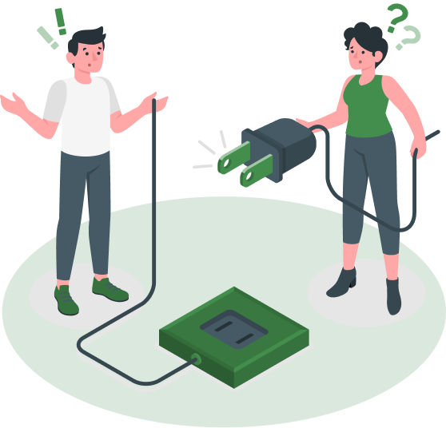

Opps! You have found the lost world
It is a long established fact that a reader will be distracted by the readable content of a page when looking at its layout.

It is a long established fact that a reader will be distracted by the readable content of a page when looking at its layout.